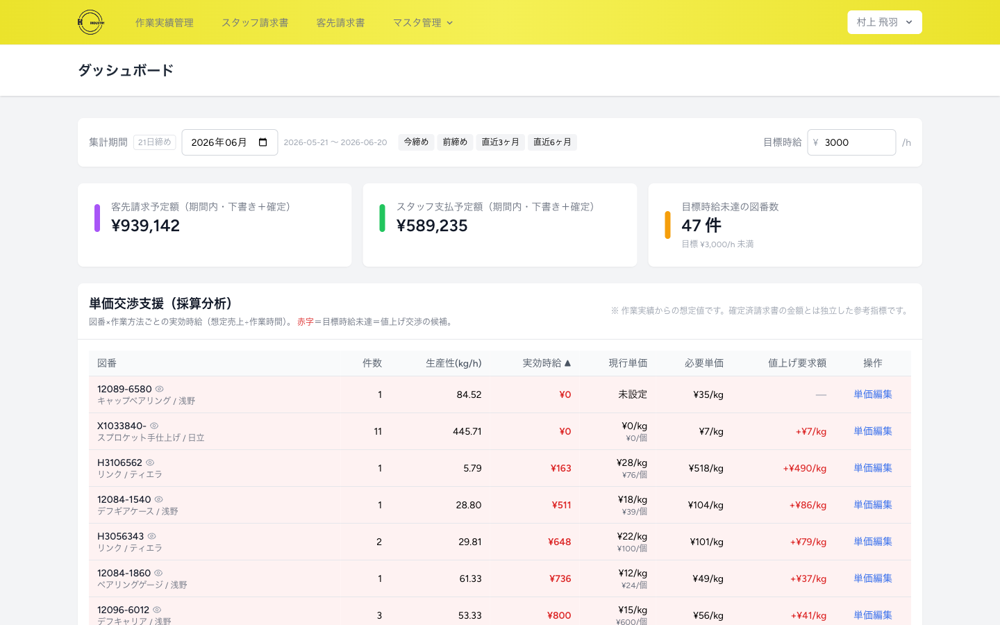
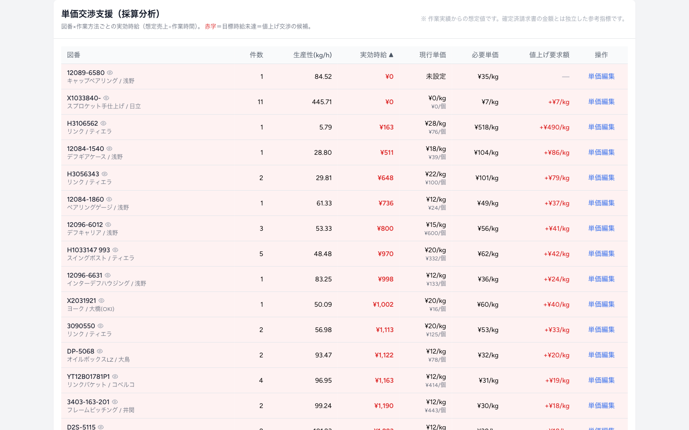
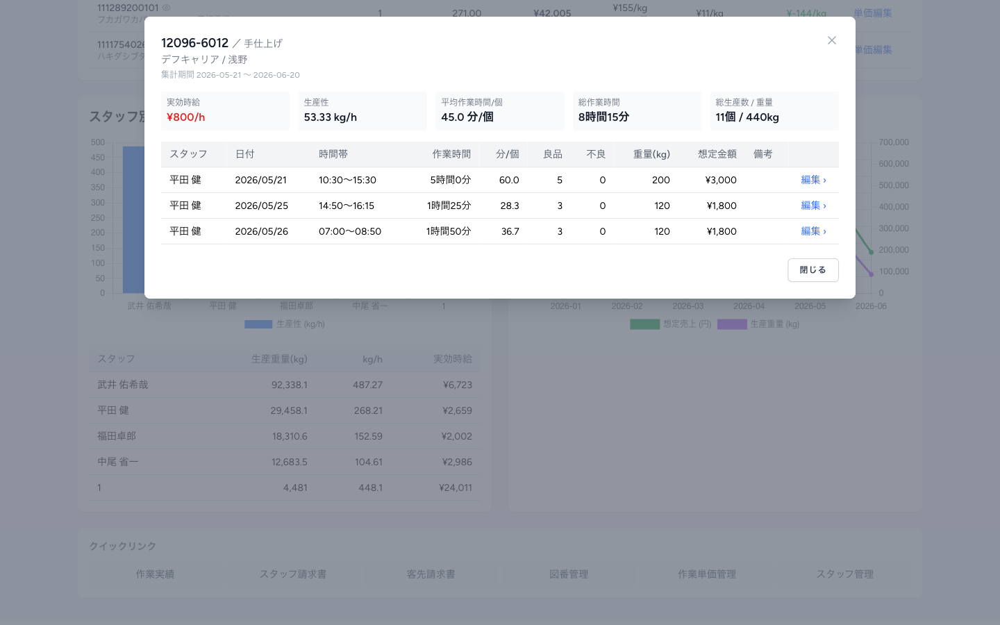
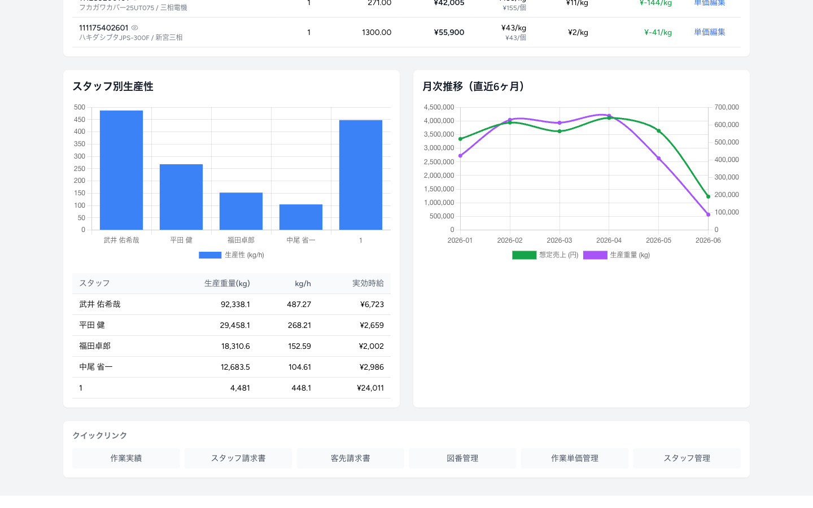

日々の作業実績を「経営判断に使える情報」へ。
採算の見える化と、単価交渉の根拠づくりを支援します。
これまで蓄積してきた「誰が・どの図番を・どれだけの時間で・何個仕上げたか」という作業実績は、 請求業務だけでなく経営判断のための貴重なデータです。 本ダッシュボードは、その実績を自動で集計・可視化し、 「割に合っていない仕事（図番）」を一目で発見できるようにしました。
※ 本資料の画面・数値はサンプルデータによる表示例です。実際の運用では貴社の実績データが反映されます。

ダッシュボードは上から順に、次の要素で構成されています。
画面左上で集計する期間を選べます。月を指定するほか、「今月／先月／直近3ヶ月／直近6ヶ月」のワンタッチ切替に対応。 採算の傾向を見るときは、件数が安定する直近3〜6ヶ月での確認をおすすめします。
右上の「目標時給」は、1時間あたりこれだけは稼ぎたい、という基準額です（例：¥3,000/h）。 この値を入力すると、後述の「必要単価」「値上げ要求額」がその場で再計算されます。一度設定すれば次回も保持されます。
| カード | 意味 |
|---|---|
| 客先請求予定額 | 選択期間に対応する、委託元への請求予定額（下書き＋確定）の合計。 |
| スタッフ支払予定額 | 選択期間に対応する、スタッフへの支払予定額（下書き＋確定）の合計。 |
| 目標時給未達の図番数 | 実効時給が目標時給に届いていない図番の件数。改善余地のボリュームが分かります。 |
本ダッシュボードの中心となる表です。図番ごとに「採算が取れているか」を一覧化し、 実効時給の低い（＝割に合わない）図番を上から順に表示します。 赤色の行は目標時給に届いていない図番で、単価交渉の最優先候補です。

| 列 | 意味 |
|---|---|
| 図番 | 図番・品名・客先。行をクリックすると作業実績の明細が開きます（第3章）。 |
| 件数 | 期間内の作業実績の件数。 |
| 生産性（kg/h） | 1時間あたり何kg仕上げられたか。作業スピードを表します。 |
| 実効時給 | その図番が1時間あたり実際にいくらの売上を生んでいるか。採算の核心です。 |
| 現行単価 | いま適用されている単価。kg単価と、参考に個単価（1個あたり）を併記。 |
| 必要単価 | 設定した目標時給を達成するために必要なkg単価。 |
| 値上げ要求額 | 「必要単価 − 現行単価」。＋（赤）＝値上げ余地、−（緑）＝すでに目標達成。 |
採算分析表の行をクリックすると、その図番の作業実績明細がポップアップで開きます。 「なぜこの図番は採算が悪いのか」を、個々の作業記録までさかのぼって確認できます。

実効時給・生産性・1個あたりの平均作業時間（分/個）・総作業時間・総生産数/重量をまとめて表示します。
スタッフ・日付・時間帯・作業時間・分/個・良品/不良数・重量・想定金額を一覧化。 各行をクリックすると、その作業実績の編集画面へ直接移動できます。

期間内のスタッフごとの生産性（kg/h）をグラフと表で表示。 生産重量・実効時給も併記し、誰がどれだけ生産しているかを客観的に把握できます。
想定売上（円）と生産重量（kg）の推移を折れ線で表示。 繁忙・閑散の波や、売上トレンドを一目で確認できます。
画面最下部には、各管理画面へ素早く移動できる「クイックリンク」も用意しています。
表示される数値は、すべて作業実績データから次の計算式で自動算出しています。透明性のため計算根拠を明記します。
| 指標 | 計算式 | 意味 |
|---|---|---|
| 生産性（kg/h） | 総生産重量 ÷ 総作業時間(h) | 1時間あたりの仕上げ重量＝作業スピード |
| 実効時給（円/h） | 想定売上 ÷ 総作業時間(h) | 1時間あたりに生む売上＝採算の核心 |
| 想定売上（円） | Σ(数量 × round(1個重量 × kg単価)) | 請求書と同じ計算方式による売上の想定値 |
| 必要単価（円/kg） | 目標時給 ÷ 生産性(kg/h) | 目標時給を達成するのに必要な単価 |
| 値上げ要求額（円/kg） | 必要単価 − 現行単価 | 交渉で詰めるべき単価の差 |
| 平均作業時間/個（分） | 総作業時間(分) ÷ 総生産数 | 1個仕上げるのにかかる平均時間 |
※「kg単価」は図番に設定された単価（正社員→個人事業主→残業の順に採用する代表単価）を用います。
※ ここでの「想定売上」は実績からの参考値で、確定済みの請求金額とは独立しています（過去の請求額を書き換えることはありません）。
※ 件数が少ない期間は数値が振れやすいため、交渉判断は直近3〜6ヶ月での集計を推奨します。
| これまで | 本ダッシュボード導入後 |
|---|---|
| 採算は感覚・経験頼り。どの図番が損益分岐かは見えづらい。 | 図番ごとの実効時給を自動算出し、赤字図番を即発見。 |
| 単価交渉の根拠が乏しく、値上げを切り出しにくい。 | 「あと＋〇〇円/kg必要」と数字で交渉できる。 |
| 現場の作業実態は集計しないと分からない。 | 気になる図番を1クリックで深掘り、編集まで即移動。 |
| 入力ミスは請求段階まで気づきにくい。 | 異常値をダッシュボード上で早期発見。 |
蓄積された作業実績を「攻めの経営判断」に活かす——本ダッシュボードはそのための土台です。 ご要望に応じて、表示指標の追加や、異常値の自動警告などの拡張も可能です。